Recetas Argentinas
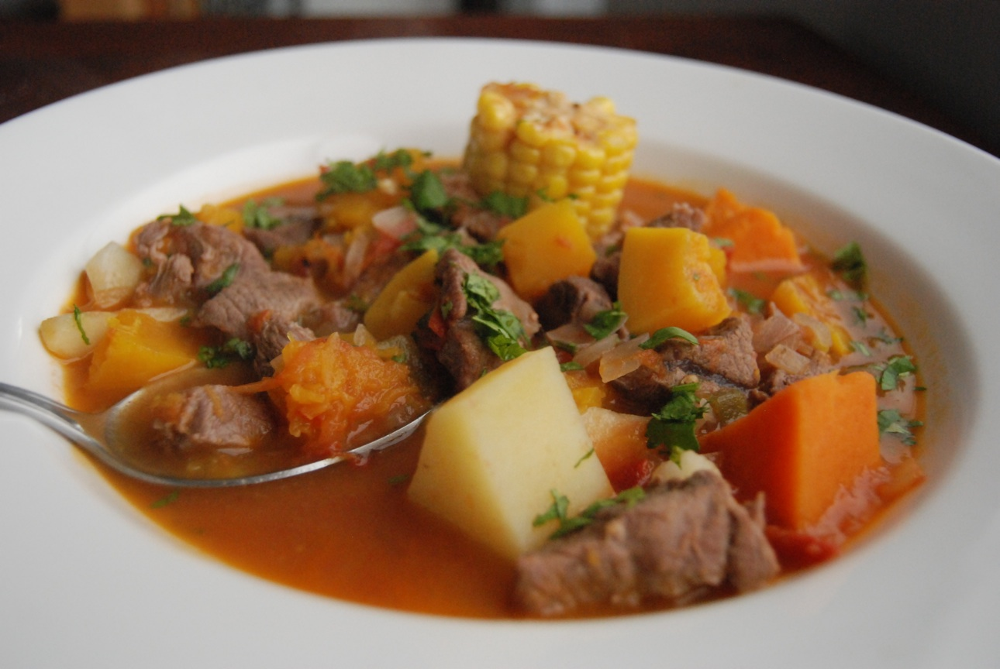
Carbonada Criolla
Plato especial para el invierno, directo desde la Patagonia Argentina.
Ir a receta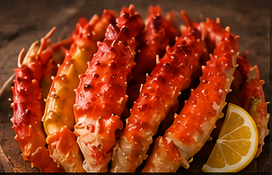
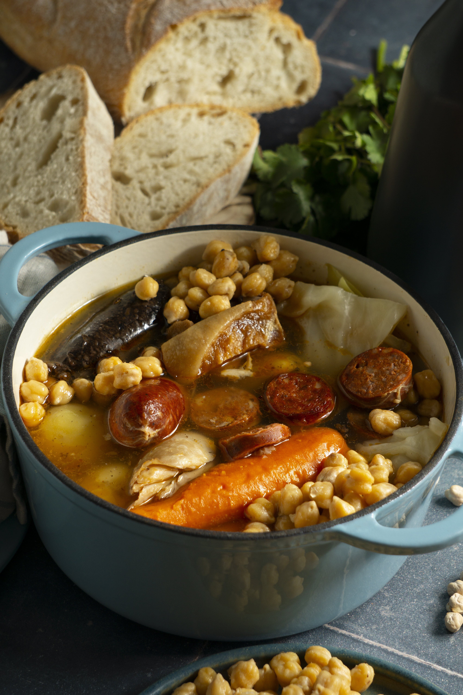
Estofado Criollo
Disfruta preparando paso a paso este Plato especial para el invierno, directo desde la Patagonia Argentina.
Ir a receta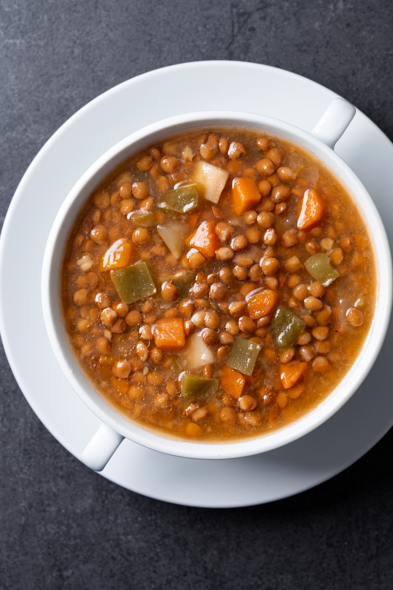
sopa criolla
Un Plato especial para todas las estaciones, directo desde la Patagonia Argentina.
Ir a receta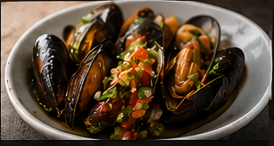
Mejillones a la vinagreta
Plato especial para entradas o mesas frias, directo desde la Patagonia Argentina.
Ir a receta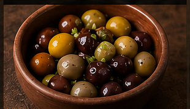
Aceitunas curadas
tremenda receta para todas las estaciones del año, directo desde la region de Cuyo de Argentina.
Ir a receta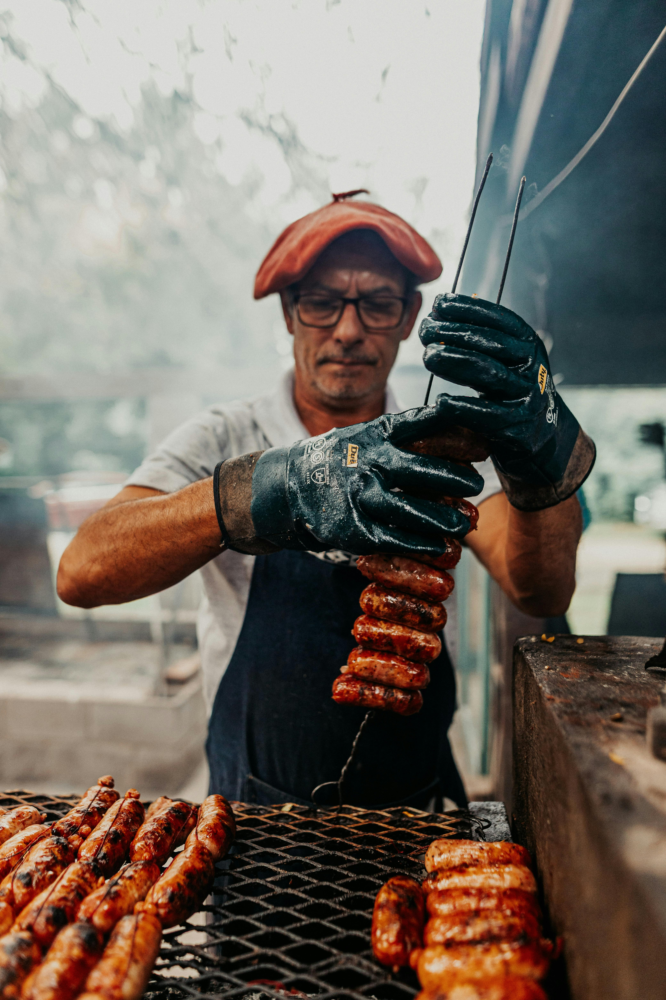
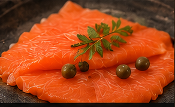
Salmon ahumado
Desde los helados rios patagonicos, llega este plato sin secretos ocultos.
Ir a receta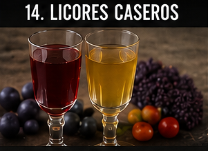
Licores Caceros
Aprende a elaborar de manera sencilla estos aperitivos para degustar sabores unicos y calidos.
Ir a receta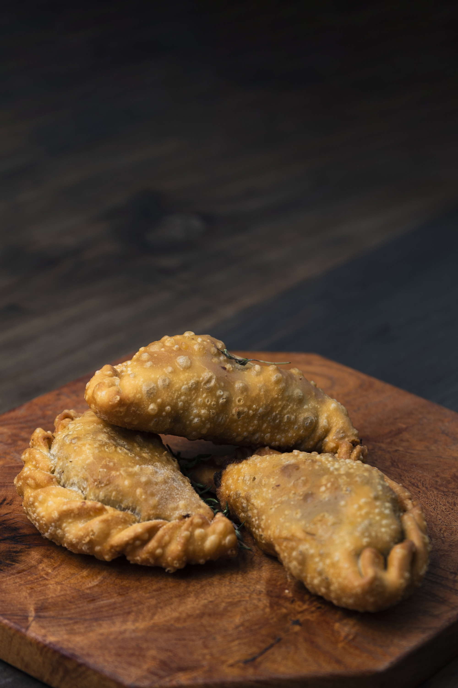
Empanadas Salteñas
Aprende los secretos de la cocina salteña y deleita a tus comensales con esta receta con aroma a peña y folclore Argentino.
Ir a receta
Pan cacero
Descubri los secretos del pan cacero con la miga más esponjosa y de cáscara crocante.
Ir a receta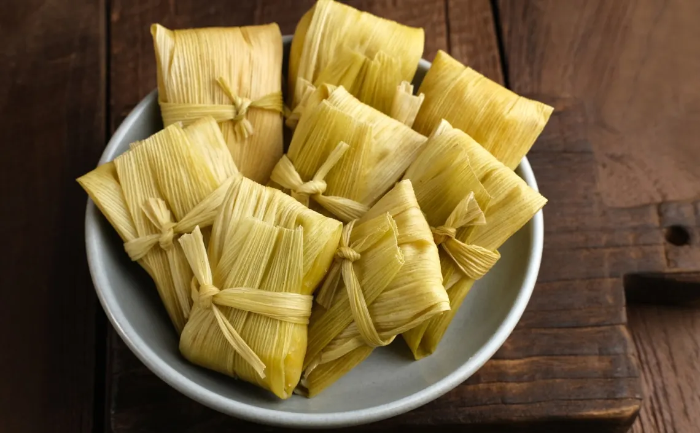
Humitas del NOA
No te podes perder estas exquistas humitas envueltas de la cultura e historia del Noroeste Arentino.
Ir a receta